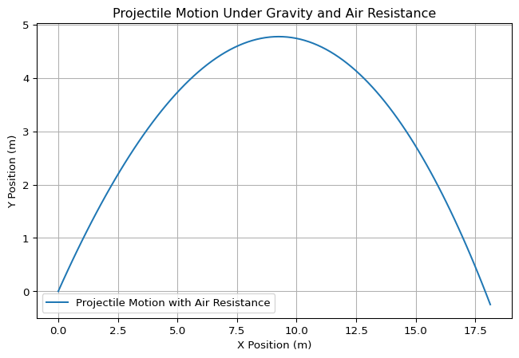

import numpy as np
import matplotlib.pyplot as plt
def projectile_range(v0, g=9.81):
# Step 1: Define the range of angles
angles = np.linspace(0, 90, 100) # Angle from 0 to 90 degrees
radians = np.radians(angles) # Convert angles to radians
# Step 2: Compute the projectile range for each angle
ranges = (v0**2 / g) * np.sin(2 * radians)
# Step 3: Plot the results
plt.figure(figsize=(8,5))
plt.plot(angles, ranges, label=f'Initial Velocity: {v0} m/s')
# Step 4: Label axes and title
plt.xlabel('Angle of Projection (degrees)')
plt.ylabel('Range (m)')
plt.title('Projectile Range vs. Angle of Projection')
# Step 5: Add legend and grid
plt.legend()
plt.grid()
# Step 6: Display the plot
plt.show()
# Example usage
projectile_range(v0=20)